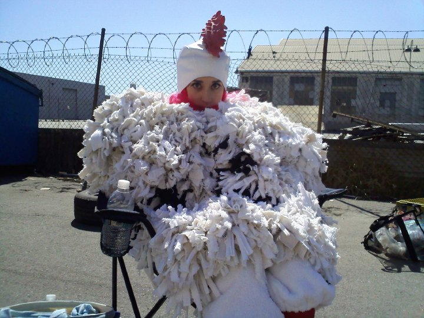
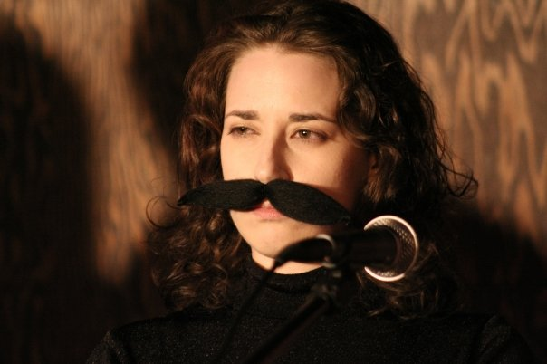

LAUREN FLANS
Actor / Contributing Writer
Lauren Flans is madly, passionately in love with comedy. She recently returned to Los Angeles after spending three-and-a-half years performing in Amsterdam with Boom Chicago, the internationally renowned improv and sketch comedy theatre. During her time in Holland, she was also the on-the-street-correspondent for Comedy Central Netherlands’ version of The Daily Show. Lauren’s nightly segment, “Flans on the Street,” involved her successfully coercing Dutch people into speaking to her on camera, despite the fact that she is irreparably American. On U.S. soil, Lauren has studied and performed at iO West, The Groundlings, The Second City, and Upright Citizens Brigade. She has a website! It is www.laurenflans.com. Lauren is absolutely thrilled to be a part of Lost Moon Radio as she strongly feels this whole “visual media” trend is on its way out.
Lauren in Action...

On the set of "Chicken vs. Egg."

Performing in "El Royale" at St. Nick's Pub.